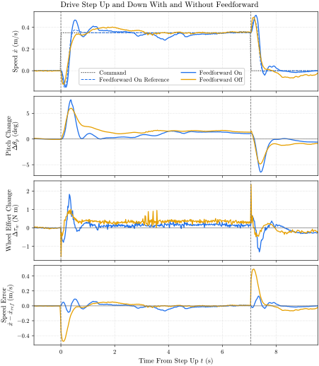
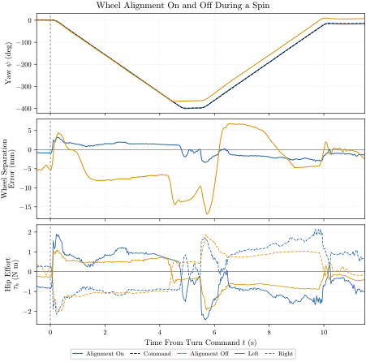
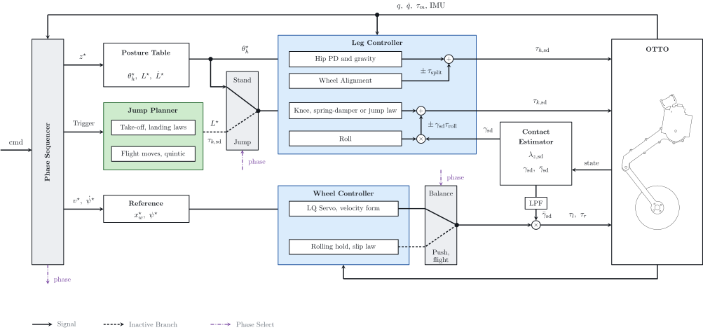
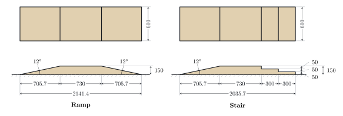
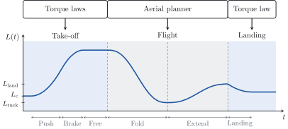

Overview
The baseline capability of the physical OTTO, which the somersault builds on. The robot balances on two wheels, follows a speed and yaw rate command, holds a height, keeps level on uneven ground and jumps straight up.
I designed these controllers for the physical robot. The control concepts follow earlier work on the platform in simulation, and I rederived the equations for the real robot.
System
| Control Rate | Both controllers run as ros2_control plugins at 1000 Hz |
|---|---|
| Power | Cable from a bench supply on the 48 V bus |
| Software | ROS 2 Jazzy, ros2_control |
Process
Control the wheels
A LQ servo on the wheeled inverted pendulum, with position and heading integrals in velocity form, balances the robot and tracks the commanded speed and yaw rate.
Control the legs
The legs have four jobs.
- Set the posture and height from a table of hip and knee angles.
- Compensate gravity.
- Keep the body level by the difference between the two leg lengths.
- Align the wheels by the difference between the two hip angles.
Estimate the contact
The ground force comes from the rigid-body dynamics, and a contact gate feeds the roll task and the wheel torque limit.
Sequence the commands
A phase sequencer routes the operator command, sending the height command to the posture table, the jump trigger to the jump planner, and the speed and yaw rate commands to the wheel controller.
Push off and brake with the knees
Four knee torque laws cover push, brake, free and landing. They start from the electrical power of the knee, because braking that returns energy raises the shared bus voltage, and past the wheel drives' limit the wheels disarm.
Set the take-off speed from the jump height
A two-body model, with a lower mass at the wheels and an upper mass along the leg, gives the take-off velocity needed for a commanded height.
Switch phases on measurements
Lift-off and touchdown are detected from the measurements, and each phase hands over to the next when its measurement is reached. An aerial trajectory planner moves the legs in flight, and a flight posture controller holds the body.
Results
The controller balances, moves, holds its height, crosses uneven ground and jumps on the physical robot. At rest the pitch spans \(1.8^\circ\) and the travel \(16.1\,\mathrm{mm}\). The legs follow the height command within \(2.7\,\mathrm{mm}\). The flight lasts about \(0.31\,\mathrm{s}\). Most cases have one run, so none of these is a success rate.
Standing Still
Standing still, the robot stays upright for \(556\,\mathrm{s}\). After a \(5\,\mathrm{s}\) moving average, \(1.4^\circ\) of the \(1.8^\circ\) pitch span remains, so most of it is slow drift.
Table 1. Standing still, after the first 10 s
| Metric | Value |
|---|---|
| Pitch, Mean (\(^\circ\)) | 2.53 |
| Pitch, Range (\(^\circ\)) | 1.85 to 3.64 |
| Travel, Range (mm) | 16.1 |
| Yaw, Range (\(^\circ\)) | 2.3 |
| Wheel Effort, Peak (\(\mathrm{N\,m}\)) | 0.80 |
Push Recovery
In all six pushes and pulls the robot is still \(6\) to \(15\,\mathrm{cm}\) past its start \(5\,\mathrm{s}\) later. Under the vertical pushes the legs hold the height within \(2.7\,\mathrm{mm}\), the knee effort rises from \(5.8\) to about \(24\,\mathrm{N\,m}\) and the roll stays within \(0.9^\circ\).
Table 2. Push recovery, range over the trials of each case
| Level | Trials | Pitch Change (\(^\circ\)) | Displacement | Motion |
|---|---|---|---|---|
| Push Forward | 3 | -14.2 to -16.7 | Travel 41 to 49 cm | Recovered |
| Pull Backward | 3 | +9.4 to +11.8 | Travel 28 to 36 cm | Recovered |
| Vertical Push | 8 | -1.3 to +3.5 | Height -2.7 to +0.7 mm | Recovered |
Height Control
In a run of \(110\,\mathrm{s}\) the height command steps between \(0.28\,\mathrm{m}\) and \(0.41\,\mathrm{m}\). The legs follow within \(2.7\,\mathrm{mm}\) and the body stays within \(1.3^\circ\) of level in pitch and \(0.9^\circ\) in roll.
Table 3. Height command, one run
| Metric | Value |
|---|---|
| Height Error, RMS (mm) | 0.65 |
| Height Error, Peak (mm) | 2.66 |
| Height error at a constant command, mean (mm) | 0.48 |
| Roll, Peak (\(^\circ\)) | 0.91 |
| Knee Effort, Peak (\(\mathrm{N\,m}\)) | 10.9 |
Uneven Ground
At \(0.35\,\mathrm{m/s}\), one wheel on the course shortens that leg from \(0.41\) to \(0.25\,\mathrm{m}\) and the body stays within \(3.2^\circ\) of level. With both wheels the roll stays below \(1.2^\circ\). Each \(50\,\mathrm{mm}\) step down gives the knee a peak of \(25.0\,\mathrm{N\,m}\).
Table 4. Uneven ground, one run each
| Level | Roll, Peak (\(^\circ\)) | Yaw Drift (\(^\circ\)) | Knee Effort, Peak (\(\mathrm{N\,m}\)) | Motion |
|---|---|---|---|---|
| One Wheel, Ramp | 3.2 | 9.4 | 10.6 | Crossed |
| One Wheel, Stairs | 3.2 | 7.2 | 15.3 | Crossed |
| Both Wheels, Ramp | 0.86 | 1.5 | 7.5 | Crossed |
| Both Wheels, Stairs | 1.19 | 1.9 | 25.0 | Crossed |
Drive Step
In a speed step to \(0.35\,\mathrm{m/s}\) the feedforward reaches the speed \(0.11\,\mathrm{s}\) sooner (Table 5). Against the raw command the RMS error is \(0.117\,\mathrm{m/s}\) with it and \(0.107\,\mathrm{m/s}\) without it, and it overshoots more, to \(0.47\,\mathrm{m/s}\).
Table 5. Drive step, one run each
| Level | Time to 90% (s) | Overshoot (%) | Speed Error, RMS (m/s) |
|---|---|---|---|
| Feedforward on | 0.40 | 33.5 | 0.031 |
| Feedforward Off | 0.51 | 15.1 | 0.107 |

Spin
In a spin at \(1.5\,\mathrm{rad/s}\) the wheel alignment keeps the wheels within \(3.3\,\mathrm{mm}\) of side by side, five times closer than without it (Table 6), for about \(0.5\,\mathrm{N\,m}\) more peak hip effort.
Table 6. Spin, one run each
| Level | Separation Error, RMS (mm) | Separation Error, Peak (mm) |
|---|---|---|
| Alignment on | 1.7 | 3.3 |
| Alignment Off | 6.9 | 16.9 |

Jump
Both jumps leave the ground, land and balance again, and the robot keeps driving after the second one (Table 7). The knee effort passes the \(60\,\mathrm{N\,m}\) command limit, and the body pitches forward by up to \(20^\circ\) in flight.
Table 7. Jump in place and while driving, one run each
| Level | Flight (s) | Pitch at Touchdown (\(^\circ\)) | Knee Effort (\(\mathrm{N\,m}\)) | Landing (g) | Motion |
|---|---|---|---|---|---|
| In Place | 0.311 | -18.5 | 69.4 | 5.5 | Landed |
| Driving | 0.307 | -10.7 | 66.9 | 5.1 | Landed |
Jump Height
The jump height was not measured. A two-body model estimates a center of mass apex of about \(10\,\mathrm{cm}\) against the \(6\,\mathrm{cm}\) target (Table 8).
Table 8. Jump height estimated from the logs, against the target of 0.06 m
| Quantity | Target | In Place | Driving |
|---|---|---|---|
| Take-Off Speed (m/s) | 1.085 | 1.43 | 1.42 |
| Center of Mass Apex (cm) | 6.0 | 10.5 | 10.3 |
| Wheel Clearance, Peak (cm) | - | 14.5 | 14.2 |
| Torso rise at the hip, peak (cm) | - | 7.1 | 7.3 |
| Forward Distance in Flight (cm) | - | 0 | 7.9 |
Figures


